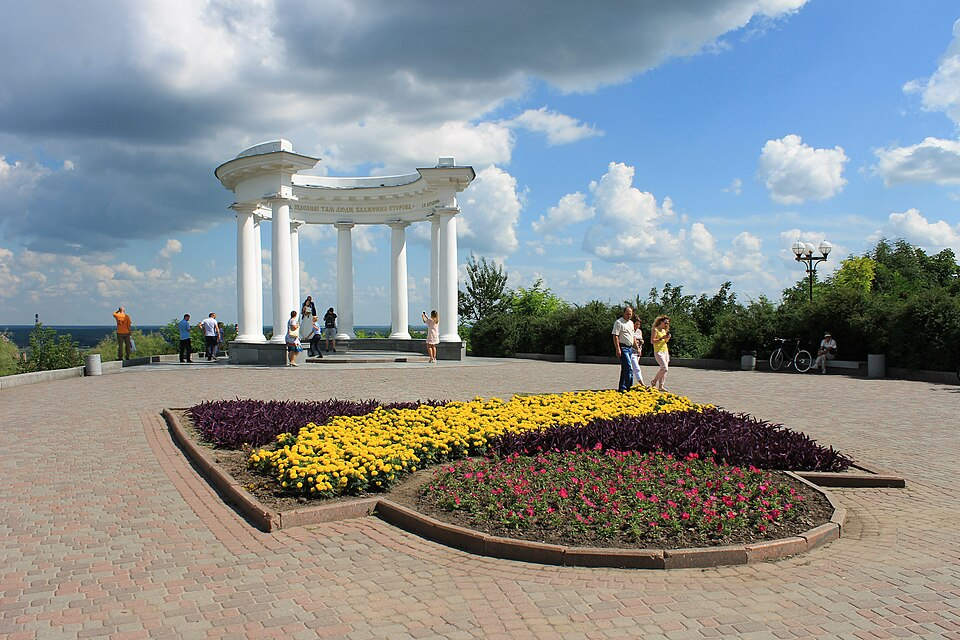
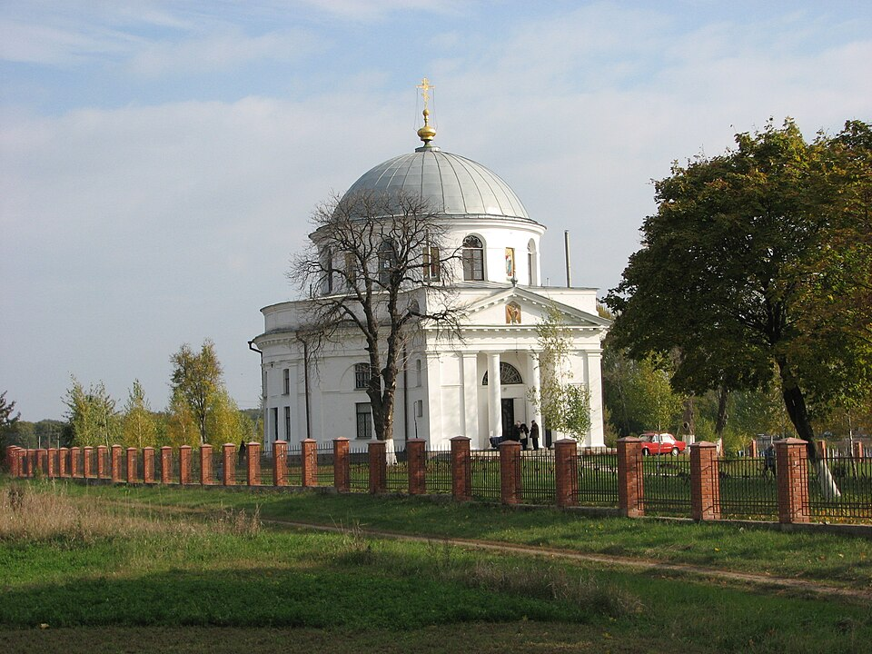
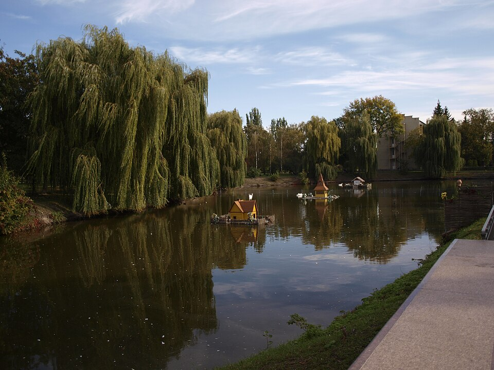

Моя Батьківщина — Полтавщина
Моя Батьківщина — Полтавщина. Тут є цікаві міста, історичні пам’ятки та мальовничі місця.
Біла альтанка
Біла альтанка в Полтаві — одне з упізнаваних місць мого краю.

Фото: Denis Vitchenko. Wikimedia Commons, CC BY-SA 4.0.

Диканька
Миколаївська церква в Диканьці, Полтавська область.

Фото: Maxim Gavrilyuk. Wikimedia Commons, CC BY-SA 4.0.

Миргород
Миргородська калюжа — ставок у місті Миргород на Полтавщині.

Фото: Batsv. Wikimedia Commons, суспільне надбання.